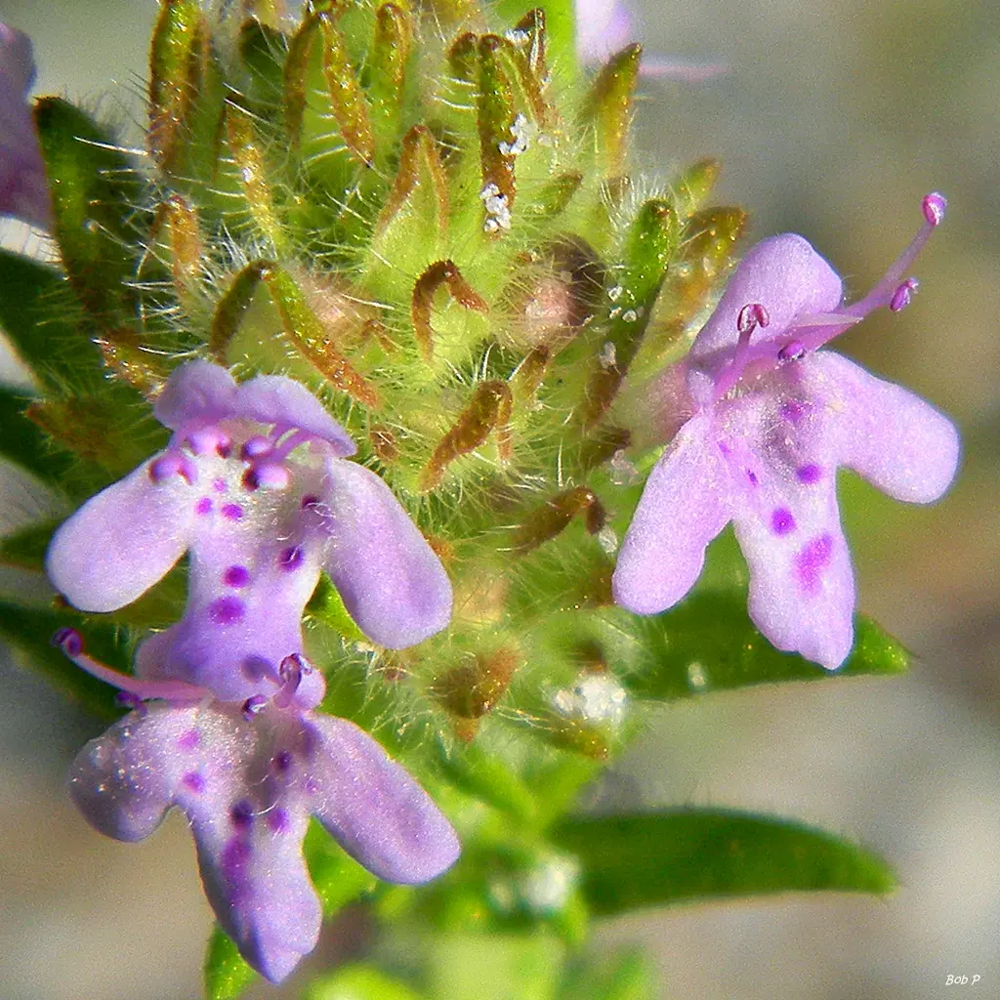
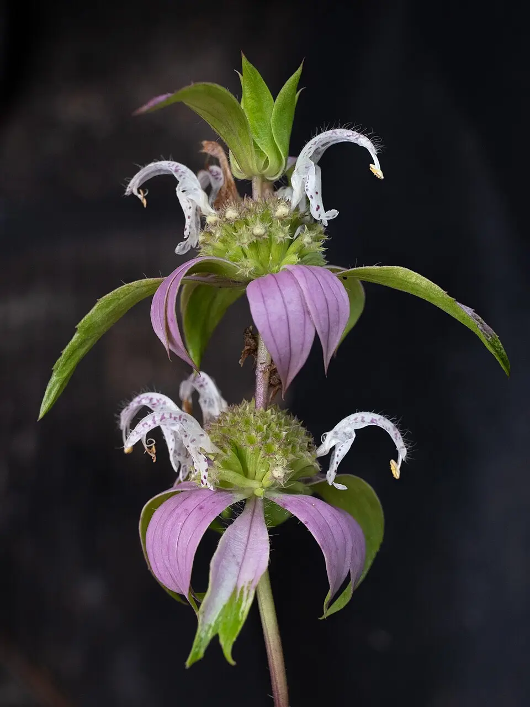
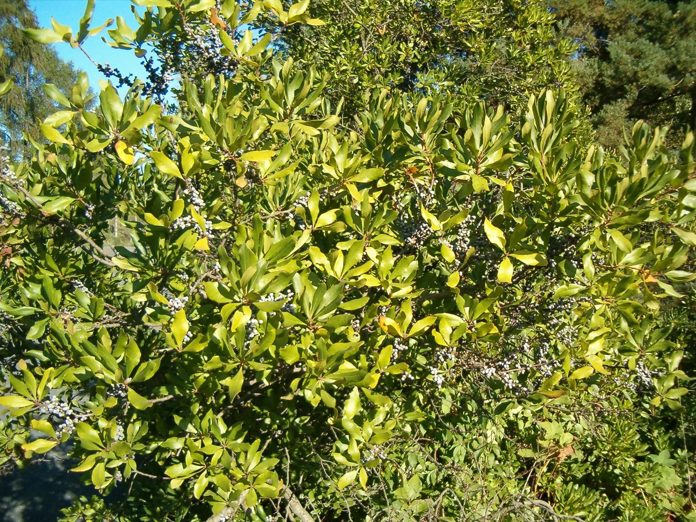
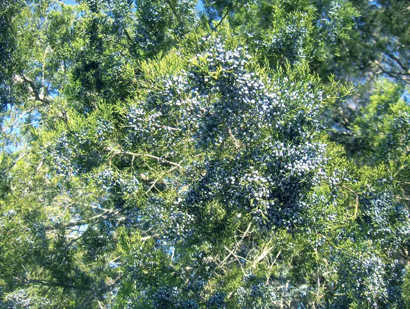

The usual list (not from Florida)
- Rosemary Mediterranean
- Mint Asia
- Basil Asia
- Thyme Mediterranean
- Oregano Mediterranean
- Sage Mediterranean
- Lemongrass South Asia
The Florida originals
- Florida pennyroyal sharp mint scent
- Spotted beebalm thymol, like thyme
- Wax myrtle spicy bayberry
- Southern red cedar cedar-closet smell
Four Florida originals with the scents rats avoid

Florida pennyroyal
Piloblephis rigidaThis one is almost exclusively ours. Florida pennyroyal grows wild in peninsular Florida and barely anywhere else on Earth. It is a true mint with dense, needle-like evergreen foliage, and the scent it releases when brushed is the classic pennyroyal smell that rodents go out of their way to avoid.
It stays small, about a foot tall, and it is happy in a container. Set pots along patio edges, near the compost area, or anywhere activity seems high. Late-winter lavender blooms feed pollinators when little else is flowering.
Photo: Wikimedia Commons, Bob Peterson, CC BY-SA 2.0.

Spotted beebalm
Monarda punctataCrush a leaf and it smells like fine Greek oregano. That is thymol, the same compound that makes thyme pungent, and spotted beebalm carries it in quantity. It is the closest thing Florida has to a homegrown thyme bed, and it thrives in the dry, sandy edges where so many local yards struggle.
From late summer into fall it stacks up whorls of pink and lavender bracts that pull in bumblebees, wasps, and butterflies by the dozen. It reseeds, so give it room or deadhead to keep it where you want it.
Photo: Wikimedia Commons, Alex Abair, CC BY 4.0.

Wax myrtle
Myrica ceriferaRun your hand through wax myrtle and the air fills with a spicy, bayberry scent. Floridians used it as an insect-repelling plant long before bug spray existed. As a fast-growing evergreen screen, it puts a wall of aromatic foliage between problem edges and the rest of your yard, and its waxy berries feed warblers all winter.
One honest placement note: keep any dense shrub, this one included, trimmed back from your roofline and walls. Branches touching the house are a roof rat's favorite highway. Wax myrtle belongs out in the yard as a screen or hedge, not pressed against the eaves.
Photo: Wikimedia Commons, User:BotBln, CC BY-SA 3.0.

Southern red cedar
Juniperus virginiana var. silicicolaThere is a reason cedar closets and cedar chests exist: rodents and insects avoid the oil in this wood. Southern red cedar is Florida's own juniper, salt tolerant and hurricane sturdy, carrying that same aromatic oil in every needle and branch.
It also happens to be one of the best wildlife trees you can plant here. Dense evergreen cover for songbirds, berries for mockingbirds and cedar waxwings, and a favorite perch for the hawks and owls we want patrolling the neighborhood.
Photo: Wikimedia Commons, Homer Edward Price, CC BY 2.0.
A bonus for the broader pest picture: American beautyberry (Callicarpa americana) earns a spot in almost every garden we design. Its crushed leaves contain callicarpenal, a compound studied for repelling mosquitoes, and its magenta fall berries are a songbird buffet. We count it as Florida's original pest-management shrub, even though its specialty is biting insects rather than rodents.
Florida is big. Where do these actually grow?
Florida runs 450 miles from Pensacola to Key West, and "Florida native" does not mean a plant belongs in every corner of it. Wax myrtle, southern red cedar, spotted beebalm, and beautyberry range across the whole state. Florida pennyroyal is the peninsula's own, found almost nowhere else on Earth, and Tampa Bay sits right in the middle of its home range.
One we left off on purpose: false rosemary (Conradina) shows up on native lists, and it is a beautiful minty shrub. It does grow in our region, in scrubby prairie and sandhill spots where it can form what is called a rosemary bald. We still do not plant it, because it is endangered and its growing conditions cannot really be recreated in a nursery setting.
In Tampa Bay specifically
Every plant on this page grows wild within a short drive of St. Petersburg, in the sandhills, flatwoods, and coastal edges of Pinellas County. We design with them across St. Petersburg, Gulfport, Largo, Clearwater, Dunedin, and Tampa. If your yard is sandy, salty, or both, these plants were built for it.